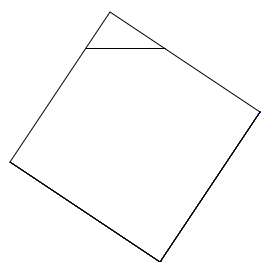
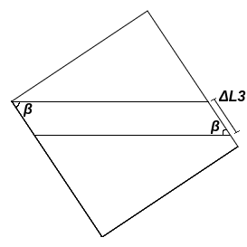
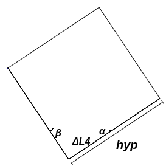

Para que seja feita a animação do experimento virtual, precisam ser calculados os $\Delta L$, eles são importantes para encontrar a distância de um ponto relevante do quadrado até a água.
O $\Delta L1$ representa uma distância variável a partir do vértice superior do quadrado, ele começa em zero, ou seja, com a água no topo do quadrado e aumenta até um ponto que não seja possivel continuar o triângulo superior (encontro com um vértice lateral do quadrado). Os ângulos podem ser calculados como: $$\beta = \arctan{\frac{cat1}{cat2}} \implies \alpha = \frac{\pi}{2}-\beta$$ O ângulo $\alpha$ é complementar a $\beta$ visto que a soma dos ângulos internos de um triângulo é 180° e o terceiro ângulo sabe-se que é 90°, pois é de um dos cantos do quadrado.
Usando a lei dos senos, vamos descrever o outro lado do triângulo em função do $\Delta L1$, assim: $$\frac{\Delta L1}{\sin{\beta}} = \frac{\Delta L1'}{\sin{\alpha}} \implies \Delta L1'= \Delta L1 \frac{\sin{\alpha}}{\sin{\beta}}$$ Sabendo que o seno é o cateto oposto dividido pela hipotenusa de um triângulo retângulo, diremos que a altura do triângulo é: $$h_\triangle=\Delta L1 \sin{\alpha}$$ Sabendo que o cosseno é igual ao cateto adjacente dividido pela hipotenusa (e portanto o cateto adjacente é igual à hipotenusa multiplicada pelo cosseno), ao somarmos os dois catetos adjacentes(em relação a $\alpha$ e $\beta$), teremos a base do triângulo: $$b_\triangle=\Delta L1 \cos{\alpha} + \Delta L1' \cos{\beta} \implies b_\triangle=\Delta L1 \cos{\alpha} + \Delta L1 \frac{\sin{\alpha}}{\sin{\beta}} \cos{\beta}$$ Agrupando os elementos que multiplicam $\Delta L1$, a base do triângulo é descrita como: $$ b_\triangle=\Delta L1(\cos{\alpha}+\sin{\alpha}\cot{\beta})$$ Para encontrarmos o valor do $\Delta L1$ em função do tempo, podemos dizer que a área do triângulo superior será igual à quantidade de água que saiu do quadrado até o momento (vazão multiplicada pelo tempo), podemos substituir a base e a altura do triângulo com termos em função de $\Delta L1$: $$V \cdot t = \frac{b_\triangle \cdot h_\triangle}{2} \implies 2V \cdot t = \Delta L1(\cos{\alpha}+\sin{\alpha}\cot{\beta}) \Delta L1 \sin{\alpha}$$ Ao multiplicarmos os $\Delta L1$ e o isolarmos, podemos extraír a raíz dos dois lados e teremos a equação que descreve $\Delta L1$ em função do tempo $t$: $$\Delta L1^2 = \frac{2V \cdot t}{\sin{\alpha}(\cos{\alpha}+\sin{\alpha}\cot{\beta})} \implies \Delta L1 = \sqrt{2\frac{V \cdot t}{\sin{\alpha}(\cos{\alpha}+\sin{\alpha}\cot{\beta})}}$$
Quando a altura da água chega a um dos vértices do quadrado, existirão três possibilidades, caso o vértice do lado direito seja mais alto que o esquerdo, após o $\Delta L1$, o $\Delta L2$ irá assumir até a altura da água chegar ao outro vértice, caso contrário, será o $\Delta L3$ o próximo, caso os dois vértices tenham a mesma altura, já será a hora do $\Delta L4$ diminuir até zero, fazendo assim a altura da água chegar ao fundo do quadrado. É importante pontuar que a cada ponto desse, o $\Delta L$ que estava sendo utilizado, para de mudar e trava no último valor.
O $\Delta L2$ varia a partir da altura do vértice do lado direito do quadrado, ele começa em zero, ou seja, com a água na altura do vértice e aumenta até que não seja mais possível continuar o paralelogramo (encontro com o vértice do lado esquerdo). A partir da definição de seno, podemos dizer que o seno de $\alpha$ é igual a divisão da altura do paralelogramo por $\Delta L2$, assim encontramos a altura $h$: $$h_\unicode{x25B1} = \Delta L2 \sin{\alpha}$$ Podemos dizer que a base do paralelogramo será igual a base do triângulo acima dele, sabendo que $\Delta L1$ é máximo: $$ b_\unicode{x25B1}=\Delta L1(\cos{\alpha}+\sin{\alpha}\cot{\beta})$$
Para encontrar o valor de $\Delta L2$ em função do tempo, dizemos que a área do paralelogramo será igual à quantidade de água que saiu do quadrado diminuída da área do triângulo superior. $$ b_\unicode{x25B1} \cdot h_\unicode{x25B1} = V \cdot t - \frac{b_\triangle \cdot h_\triangle}{2}$$ $$\Delta L2 \sin{\alpha} \Delta L1(\cos{\alpha}+\sin{\alpha}\cot{\beta}) = V \cdot t - \frac{\Delta L1^2}{2}\sin{\alpha}(\cos{\alpha}+\sin{\alpha}\cot{\beta}) $$ Dividindo os dois lados da equação pelo grande termo que multiplica o $\Delta L2$, ele pode ser isolado e assim descrito em função do tempo t: $$\Delta L2 = \frac{V \cdot t}{\Delta L1 \sin{\alpha}(\cos{\alpha}+\sin{\alpha}\cot{\beta})}-\frac{\Delta L1}{2} $$
O $\Delta L3$ segue o mesmo raciocínio do $\Delta L2$, a única diferença sendo o ângulo, que em vez de ser $\alpha$ é o $\beta$. A partir da definição de seno, podemos dizer que o seno de $\beta$ é igual a divisão da altura do paralelogramo por $\Delta deltaL3$, assim encontramos a altura $h$: $$h_\unicode{x25B1} = \Delta L3 \sin{\beta}$$ Podemos dizer que a base do paralelogramo será igual a base do triângulo acima dele, sabendo que $\Delta L1$ é máximo: $$ b_\unicode{x25B1}=\Delta L1(\cos{\alpha}+\sin{\alpha}\cot{\beta})$$
Assim como o $\Delta L2$ a área do paralelogramo tem o mesmo valor da quantidade de água que saiu do quadrado diminuída da área do triângulo pequeno. $$ b_\unicode{x25B1} \cdot h_\unicode{x25B1} = V \cdot t - \frac{b_\triangle \cdot h_\triangle}{2}$$ $$\Delta L3 \sin{\beta} \Delta L1(\cos{\alpha}+\sin{\alpha}\cot{\beta}) = V \cdot t - \frac{\Delta L1^2}{2}\sin{\alpha}(\cos{\alpha}+\sin{\alpha}\cot{\beta}) $$ Exatamente como fizemos anteriormente, iremos dividir os dois lados da equação pelos termos que multiplicam o $\Delta L3$, assim o isolando: $$ \Delta L3 = \frac{V \cdot t}{\Delta L1\sin{\beta}(\cos{\alpha}+\sin{\alpha}\cot{\beta})} -\frac{\Delta L1}{2}\frac{sin{\alpha}}{\sin{\beta}} $$
Depois que a água passar pelos dois vértices laterais do quadrado, será a hora de diminuir até o fundo, com o $\Delta L4$, ele pode ter dois formatos, veja a seguir:
O $\Delta L4$ é um pouco diferente dos outros nesse sentido, pois ele começa no seu tamanho máximo e vai diminuindo até chegar em zero. Caso o vértice direito seja o mais alto, o $\Delta L4$ inicial será x, esse x é definido usando a lei dos senos assim como o $\Delta L1'$, veja: $$ x = hyp \frac{\sin{\beta}}{\sin{\alpha}}$$ No caso do vértice esquerdo ser o mais alto, o $\Delta L4$ será igual à hipotenusa. O x ou a hipotenusa são importantes depois para a parte da animação, visto que para encontrarmos a altura da parte acima da água do $\Delta L4$, esse trecho será referido como $(x-\Delta L4)$ ou $(hyp - \Delta L4)$ (Nos outros o trecho era referido apenas como o $\Delta L$).
Entretanto, em qualquer um dos três casos o método de calcular o $\Delta L4$ é o mesmo, podemos dizer que a área do triângulo inferior é igual a área total do quadrado da hipotenusa subtraindo toda a água que já saiu do quadrado. A área do triângulo depende da sua base e altura, semelhante ao $\Delta L1$ temos que: $$h_\triangledown=\Delta L4 \sin{\alpha}$$ $$ b_\triangledown=\Delta L4(\cos{\alpha}+\sin{\alpha}\cot{\beta})$$ Assim escrevendo a expressão que descreve a área do triângulo inferior, teremos: $$\frac{b_\triangledown \cdot h_\triangledown}{2}= A_\square- V\cdot t $$
$$\Delta L4(\cos{\alpha}+\sin{\alpha}\cot{\beta})\frac{\Delta L4 \sin{\alpha}}{2}=hyp^2-V \cdot t \implies \Delta L4^2 = \frac{2 hyp^2-2 V \cdot t}{\sin{\alpha}(\cos{\alpha}+\sin{\alpha}\cot{\beta})}$$ Com o $\Delta L4$ isolado, só é preciso extrair a raíz dos dois lados e teremos o valor em função do tempo: $$ \Delta L4 = \sqrt{\frac{2hyp^2-2V \cdot t}{sin{\alpha}(\cos{\alpha}+\sin{\alpha}\cot{\beta})}} $$
Além do quadrado da hipotenusa esvaziar, foi feito também os quadrados dos catetos encherem, esses foram mais simples, caso você não tenha visto a expressão que explica a vazão para cada quadrado dos catetos, volte lá. Para descobrir o $\Delta H$ (a altura variável) para cada quadrado, diremos que a área variável é igual à quantidade de água que já entrou no quadrado, assim: $$\Delta H1 \cdot cat1 = V1 \cdot t \implies \Delta H1 = \frac{V1 \cdot t}{cat1}$$ Para o outro quadrado, a mesma coisa, porém com a sua vazão e o valor do seu cateto: $$\Delta H2 \cdot cat2 = V2 \cdot t \implies \Delta H2 = \frac{V2 \cdot t}{cat2}$$